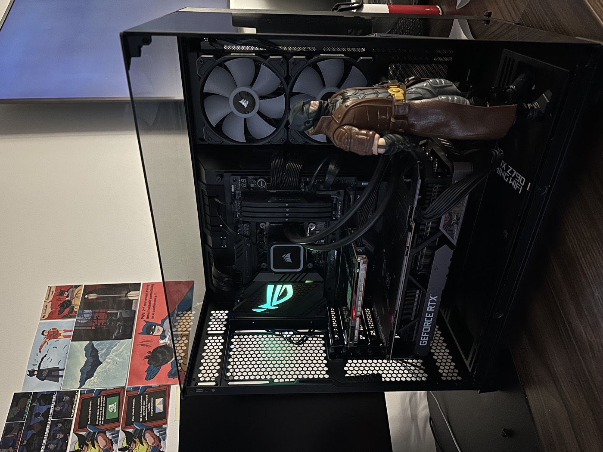

Because Every Researcher Needs a Batcave
When I'm not busy with research, debugging code, or questioning my life choices during yet another late-night experiment, I'm a pretty big Batman fan.
And naturally, being a Batman fan means having a Batcave of my own. Maybe not the kind with a Batmobile, a supercomputer, and Alfred bringing me coffee (still working on those), but I've tried to give my workstation a little Gotham-inspired personality.
From the overall desk setup to the Batman figurines proudly guarding the floating shelves above it, I've put together my own little corner of Gotham. It's where research gets done, ideas come to life, and occasionally, where I just sit and admire my setup instead of actually working.
After all, I'm not saying I'm Batman. I'm just saying nobody has ever seen Batman and me debugging code in the same room.
